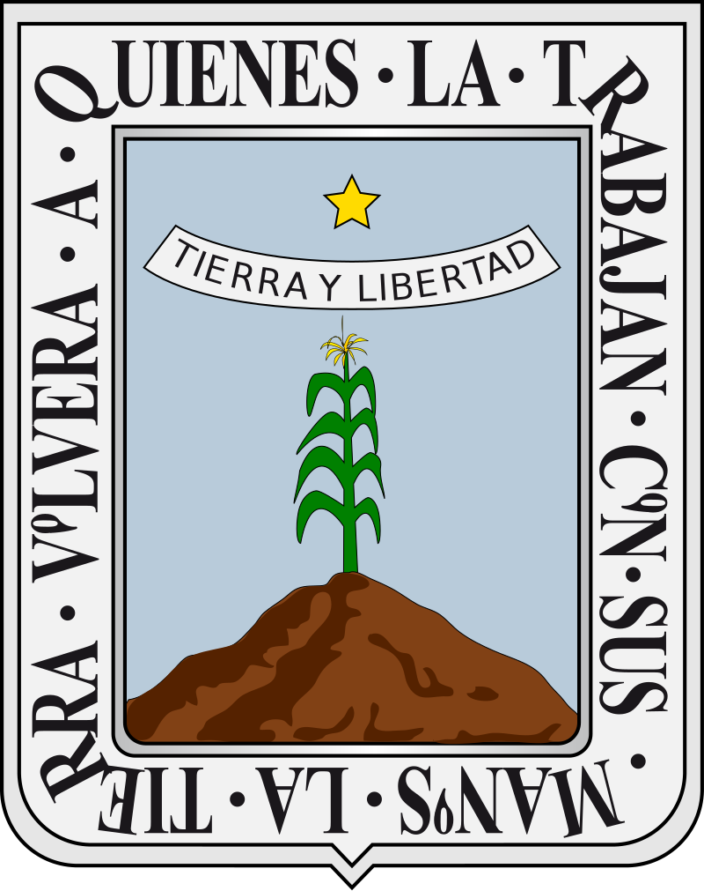

Situación:
El Estado de Morelos no cuenta con una guía estatal propia para elaborar estudios de
riesgo ambiental.
En su lugar, cuenta con el Reglamento de la Ley del Equilibrio Ecológico y la
Protección al Ambiente del Estado de Morelos en Materia de evaluación
del Impacto y Riesgo Ambiental, donde se proporciona información del contenido de los Estudios de
Riesgo en los artículos 26 y 27.
Calificación otorgada a la guía:
0
| Fecha de emisión | Contenido |
|---|---|
| 2017
Reglamento de la Ley del Equilibrio Ecológico y la Protección al Ambiente del Estado de Morelos en Materia de evaluación del Impacto y Riesgo Ambiental. |
I. Datos generales del promovente, acreditando la personalidad con la que se
ostenta, así como del responsable de la elaboración del estudio de riesgo;
II. Descripción general del proyecto; III. Aspectos del medio natural y socioeconómico; IV. Integración del proyecto a las políticas marcadas en los programas de desarrollo urbano; V. Descripción del proceso; VI. Análisis y evaluación del riesgo; a través de la metodología “Que pasa si”, y/o “Lista de chequeo” así como el método HAZOP y un árbol de identificación de riesgo; VII. Resumen; VIII. Identificación de los instrumentos metodológicos y elementos técnicos que sustentan la información señalada en el estudio de riesgo ambiental; IX. Memoria de cálculo de la simulación y corridas; X. Diagrama de tuberías e instrumentación o plano mecánico de la instalación; XI. Hojas de seguridad de sustancias que se manejan, y XII. Diagrama de pétalos o radios de afectación ubicados plano a escala mínima de 1:50 de la instalación. |
| Identificación de peligros | Identificación de escenarios. | Jerarquización de riesgos | ||||||||
|---|---|---|---|---|---|---|---|---|---|---|
| AHA | What If | Check List | PHA | FMEA | Árbol de fallos | Árbol de eventos | HAZOP | Índice Dow | Índice Mond | Matriz de Jerarquización |
| No aplica. No existe guía. | ||||||||||
| Zona de Riesgo | Zona de Amortiguamiento | ||||
|---|---|---|---|---|---|
| Incendio | Explosión | Toxicidad | Incendio | Explosión | Toxicidad |
| No sugiere metodologías. No existe guía. | |||||